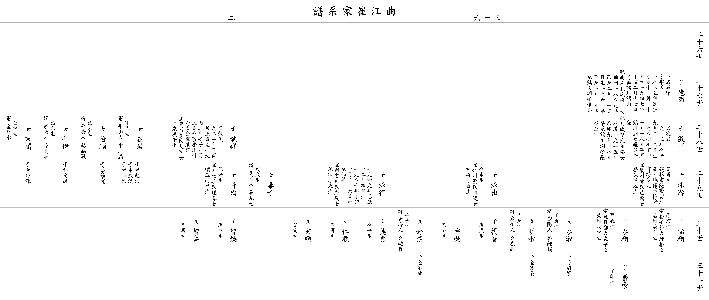

| 곡 강 최 가 계 보 |
| 이전☜ 쪽 36-2 ☞다음 |
| 26세 | ||||||||||||
| 27세 |
▲ 덕린 德隣 |
아버지 △홍식 (洪植))의 둘째 아들 일명 석봉(石峰) 자 우천(宇天) 1885년(高宗乙酉) 12월20일생 1947년(丁亥) 2월17일 별세 묘 학천동산 할머니 곡부공씨 득일(得一)의 따님 백동(伯洞) 1889년(乙丑) 2월25일생 1961년(辛丑) 1월1일 별세 묘 학천동 송라곡 |
||||||||||
| 28세 |
징상 徵祥 |
일명 차암(次岩) 1913년(癸丑) 9월22일생 1987년(丁卯) 10월18일 별세 묘 학천동 송라곡 壬坐 할머니 월성이씨 상전(相琠)의 따님 무한(無漢) 1915년(乙卯) 9월18일 별세 묘 학천동 송라곡 壬坐 딸 태자(泰子) 무술생 사위 진주인 강윤선(姜允先) |
용상 龍祥 |
일명 용준(龍俊) 1921년(辛酉) 1월 5일생 1972년(壬子) 1월 5일 별세 묘 경주 서라벌 공원묘원 아내 진주강씨 대정(大亭)의 따님 복선(卜先) 경오생 혼인 후 2년 만인 21세에 부군께서 먼저 돌아가시고, 홀로 시누이를 출가시키고, 시어머님의 임종까지 돌보시며, 외아들을 키우고 집안을 일으키는 데 크게 이바지하셨다. |
||||||||
| 29세 |
영한 泳澣 |
계유생 학림서원 잔류재산과 토지를 보호 유지에 큰 공을 세움 아내 경주진씨 기룡(己龍)의 따님 딸 경주(慶珠) 갑술생 딸 태숙(泰淑) 정유생 사위 밀양인 박종호(朴鍾鎬) 외손 박해현(朴海賢) 딸 명숙(明淑) 신축생 사위 경주인 김재우(金在禹) 외손 김창영(金昌榮) |
영출 泳出 |
계미생 아내 인천채씨 상한(相漢)의 따님 전득(田得) 을유생 딸 정이(婷羡) 임자생 사위 김해인 김종철(金鍾哲) 외손 김범진(金範陣) |
영율 泳律 |
1949년(己丑) 12월 4일생 1987년(丁卯) 10월26일 별세 묘 선장 아내 신안주씨 희제(熙堤)의 따님 금숙(錦淑) 을미생 딸 미정(美貞) 계축생 딸 인순(仁順) 신유생 딸 해순(亥順) 계해생 |
기출 奇出 |
기축생 포항 철강공단 의료보험 조합에서 일하며 의료보험공단 설립에 크게 이바지하여 보건복지부 장관상을 수상, 족숙 도상(徒祥)과 합심하여 산남종친회 세보 발간에 협력하였으며, 산남종친회 총무 재임시 종친회 발전에 제도적 기틀 마련 및 청년회 조직운영, 대윤(大潤)공 종회 결성(족숙 直祥, 鐘植, 潤煥, 鐘根, 實寬)등 문중 재산관리에 기여함. 아내 월성이씨 종춘(鍾春)의 따님 순옥(順玉) 병신생 |
||||
| 30세 |
우석 祐碩 |
기해생 아내 무안박씨 종근(鍾根)의 따님 후희(后姬) 경자생 |
태석 泰碩 |
갑진생 아내 연일정씨 재화(在華)의 따님 경희(景姬) 무신생 |
양지 揚智 |
경술생 |
재영 宰榮 |
을묘생 |
지환 智煥 |
경신생 | ||
| 31세 |
진호 晋豪 |
정묘생 | ||||||||||
| 이전☜ 쪽 36-2 ☞다음 |
|  |